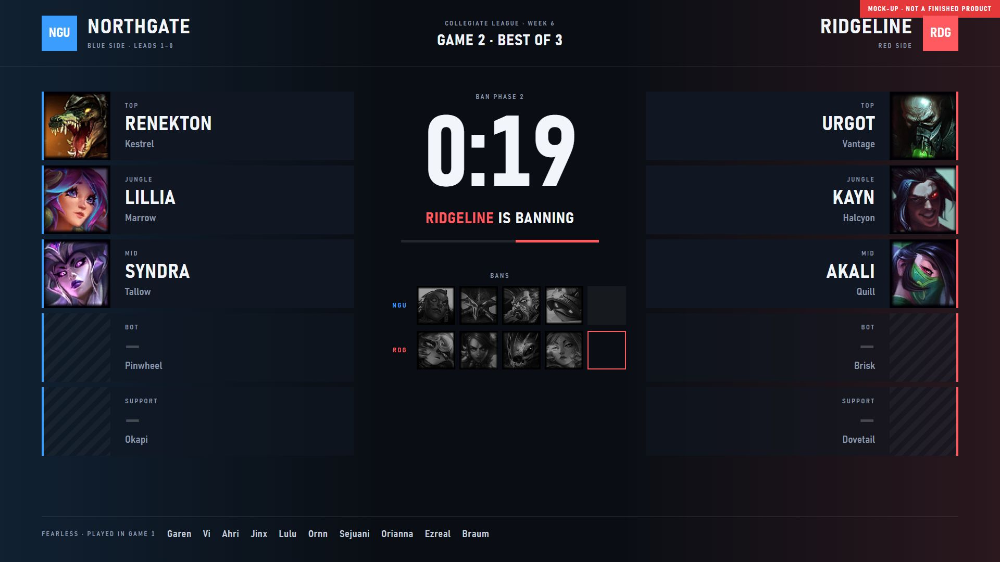
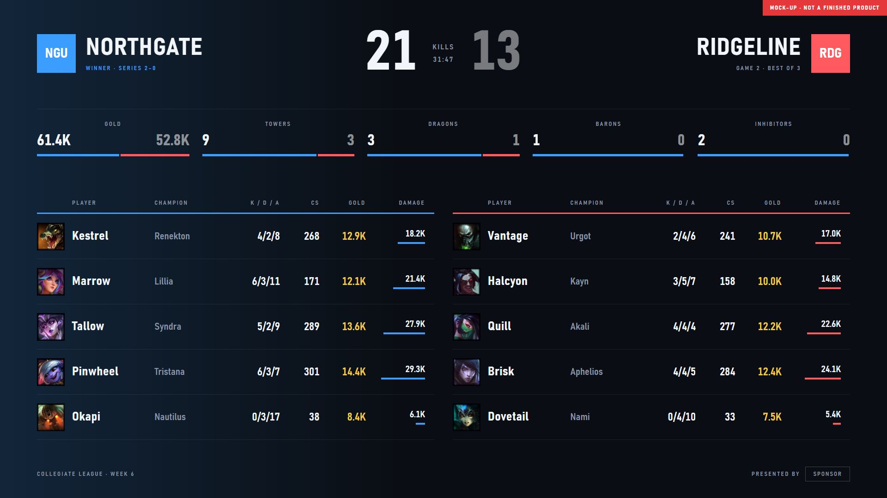
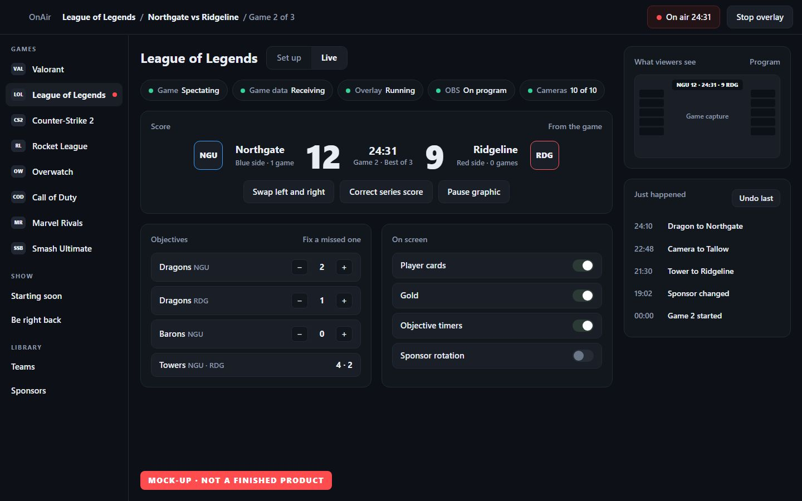

Not a finished product. The pictures on this page are mock-ups that show what OnAir for League of Legends could look like. Teams, players and numbers are made up, and the design may change.
League of Legends broadcasts for schools, run by one operator.
OnAir is a desktop app for the person running a school's stream. Most college and high school programs have one person on the broadcast and no production crew. OnAir puts team names, logos, the series score and live match graphics on the school's stream through OBS, and keeps them right while the match is played.
![Mock-up of the OnAir League of Legends graphics over a match: a score bar at the top centre with both schools, kills, towers, dragons, team gold and the game clock; a table along the bottom with a row for each lane showing both players' champion, level, kills, deaths and assists, creep score, gold, items and summoner spells; objective timers in the top-left corner; and the match title and a sponsor slot in the bottom-left corner. The game's own minimap is in the bottom-right corner. A red label reads mock-up, not a finished product.](../img/league-overlay.jpg)
Before and after the game
The broadcast does not stop when the game does. OnAir carries the stream through champion select and shows a summary when the game ends.




The desktop app
The operator sets up the two teams and the series in the OnAir desktop app, checks that everything is connected, and goes live. During the match the desktop app keeps the graphics in step with the game, and the operator can fix a missed objective, correct the series score or change what is on screen.


Where the information comes from, and what OnAir does not do
For League of Legends, OnAir reads the match on the tournament observer's PC, with the game in spectator mode. It uses Overwolf's game events, Riot's Live Client Data and Replay APIs, and the League client for champion select. It does not use the Riot web API.
Shown on the broadcast
- The match: kills, towers, objectives and the game clock.
- The ten players: name, champion, level, kills, deaths and assists, creep score, items, summoner spells and death timers.
- Champion select: picks and bans as they happen.
- After the game: a summary of the result.
- Gold and summoner spell timers are in these mock-ups to show the idea. They will be on a broadcast only from a source Riot approves.
Never
- Shown to players. The graphics are on the broadcast only and give no in-game advantage.
- Run on a player's PC. OnAir runs only on the observer's PC.
- Sent to an outside server. Everything stays on the stream PC and goes out only as the picture on the stream.
- Kept as player statistics. No profiles, rankings, ratings or scouting.
How it fits together
Everything runs on the school's own PCs.
Status
OnAir for League of Legends is in development. This page is a concept preview: the pictures are mock-ups, not a finished product. OnAir is in use today on live collegiate esports broadcasts; the main OnAir page shows its VALORANT overlay.